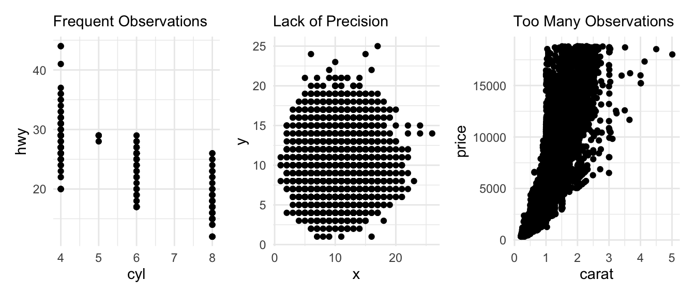
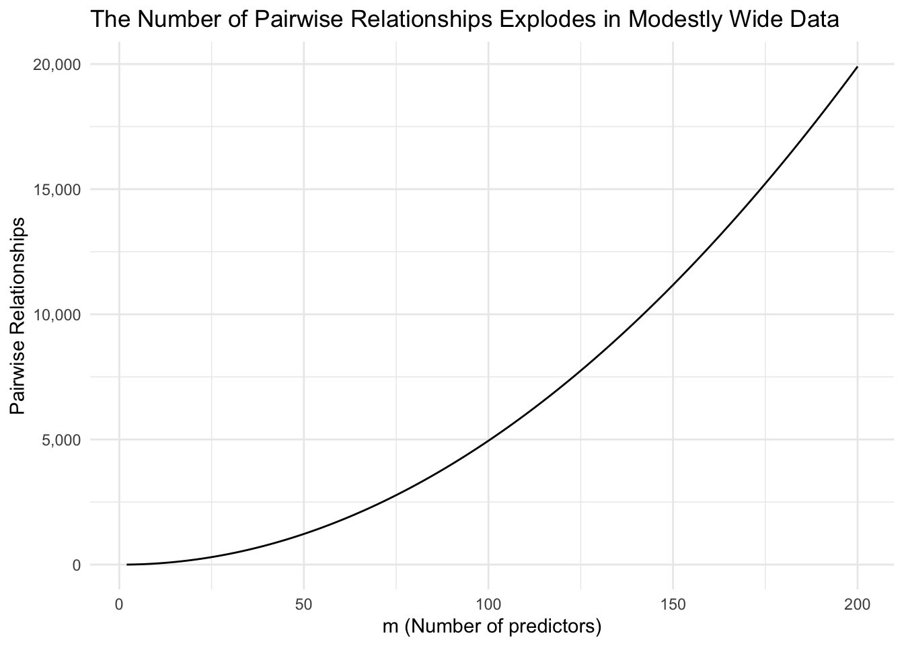
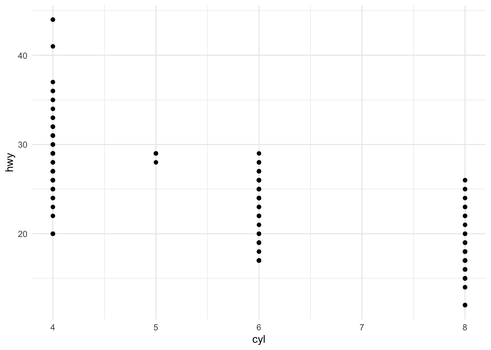
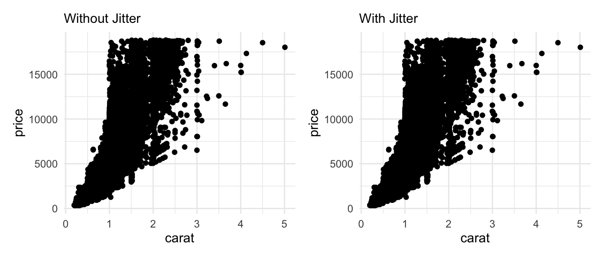

4 Visualizing Big Data
5 Big Data
Our examples thus far have focused on data sets with a modest number of observations and variables. Larger data sets can create new challenges.
5.1 Challenge 1: Overplotting
Overplotting is when some geometric objects in a data visualization obscure other geometric objects. Overplotting is common when there is a highly frequent observation, if there is a lack of precision, or too many observations.

5.2 Challenge 2: Too many pairwise comparisons
If \(m\) is the number of variables in a data set, then there are \(\frac{m(m - 1)}{2}\) pairwise relationships in a data set.
tibble(m = 2:200) %>%
mutate(`Pairwise Relationships` = m * (m - 1) / 2) %>%
ggplot(aes(m, `Pairwise Relationships`)) +
geom_line() +
labs(
title = "The Number of Pairwise Relationships Explodes in Modestly Wide Data",
x = "m (Number of predictors)"
) +
scale_y_continuous(labels = scales::comma)
6 Overplotting
6.0.1 Exercise 1
A data set doesn’t need thousands of observations to have overplotting. Consider a simple example using the mpg data set from library(ggplot2).
Step 1: Create this plot using the mpg data set with variables cyl and hwy.

Step 2: Use nrow(mpg) to count the number of observations in mpg. Is there overplotting?
Step 3: Replace geom_point() with geom_jitter(). What happens?
Step 4: Experiment with the width and height arguments. You can see the documentation with ?geom_jitter. What seems to be the best “best” combination?
The first pillar in The Seven Pillars of Statistical Wisdon by Stephen Stigler identifies an interesting paradox:
“By aggregating, you lose the identity of the individual, so you’re throwing away information, but you’re also gaining information of a different sort. No one wants to be reduced to a statistic, but by losing the identity of the individual, you are producing information about the group.”
geom_jitter() creates a similar paradox. Just like how we gain information by throwing out information with aggregation, we can gain clarity by introducing errors to our data with geom_jitter().
6.0.2 Exercise 2
Now we’ll focus on the diamonds data set from library(ggplot2). It contains information about 53,940 diamonds.
glimpse(diamonds)Rows: 53,940
Columns: 10
$ carat <dbl> 0.23, 0.21, 0.23, 0.29, 0.31, 0.24, 0.24, 0.26, 0.22, 0.23, 0.…
$ cut <ord> Ideal, Premium, Good, Premium, Good, Very Good, Very Good, Ver…
$ color <ord> E, E, E, I, J, J, I, H, E, H, J, J, F, J, E, E, I, J, J, J, I,…
$ clarity <ord> SI2, SI1, VS1, VS2, SI2, VVS2, VVS1, SI1, VS2, VS1, SI1, VS1, …
$ depth <dbl> 61.5, 59.8, 56.9, 62.4, 63.3, 62.8, 62.3, 61.9, 65.1, 59.4, 64…
$ table <dbl> 55, 61, 65, 58, 58, 57, 57, 55, 61, 61, 55, 56, 61, 54, 62, 58…
$ price <int> 326, 326, 327, 334, 335, 336, 336, 337, 337, 338, 339, 340, 34…
$ x <dbl> 3.95, 3.89, 4.05, 4.20, 4.34, 3.94, 3.95, 4.07, 3.87, 4.00, 4.…
$ y <dbl> 3.98, 3.84, 4.07, 4.23, 4.35, 3.96, 3.98, 4.11, 3.78, 4.05, 4.…
$ z <dbl> 2.43, 2.31, 2.31, 2.63, 2.75, 2.48, 2.47, 2.53, 2.49, 2.39, 2.…Jittering helps with overplotting with modestly sized data sets. It is not helpful with larger data sets. Let’s look at the diamonds data set with jitter:
without_jitter <- diamonds %>%
ggplot(aes(x = carat, y = price)) +
geom_point() +
labs(subtitle = "Without Jitter")
with_jitter <- diamonds %>%
ggplot(aes(x = carat, y = price)) +
geom_jitter() +
labs(subtitle = "With Jitter")
without_jitter + with_jitter
Step 1: Create a scatter plot with the diamonds data set that shows the relationship between carat and price.
Step 2: Try the following changes:
- Change the size of points with the
sizeargument ingeom_point(). - Change to hollow points with
shape = 1ingeom_point(). - Add transparency to points with
alpha = 0.1ingeom_point(). - Use
facet_wrap()andfacet_grid() - Try sampling with the following:
diamonds %>%
slice_sample(n = 1000) %>%
ggplot() + ...
Step 3: Which do you prefer? What did you learn about the diamonds data set with these different techniques?
6.0.3 Exercise 3
We’ll continue with the diamonds data set. This time we’ll experiment with some summaries instead of visualizing all observations directly.
Step 1: Create a scatter plot with the diamonds data set that shows the relationship between carat and price.
Step 2: Try the following changes:
- Use
geom_hex()instead ofgeom_point()for multi-dimensional binning with hexagons. Experiment with different values for the argumentbins. - Add
geom_smooth()to add a model on top of the points.
6.0.4 Long Data Summary
Overplotting is a major challenge even with modestly sized data. There are at least three causes for the problem:
- Frequent values
- Lack of precision
- Many observations
We’ve explored some solutions to overplotting, but the right solution depends on the cause of the overplotting:
- Adding noise works for frequent values and lack of precision, but does not work for many observations.
- Faceting can help with all three causes depending on the data.
- Adding transparency almost always helps.
- Binning the data or adding summaries doesn’t add much clarity for frequent values or lack of precision, but is essential for very large data sets.
- Sampling is also a useful tool when interested in general trends, but sampling can obscure anomalies, rare events, and uncommon relationships.
7 Wide Data
Techniques for visualizing wide data, and dimension reduction more broadly, are far less settled in the literature.
7.0.1 Exercise 4
Approach 1: parallel coordinate plots (Inselberg 1985)
Step 1: Install and load the GGally package.
Step 2: Install and load the palmerpenguins package.
Step 3: Pipe (%>%) the data into ggparcoord(columns = 2:5).
Step 4: Add alphaLines = 0.3 inside of ggparcoord().
Step 5: Add groupColumn = 1 inside of ggparcoord().
7.0.2 Exercise 5
Approach 2: scatterplot matrices (Carr 1985)
Step 1: Install and load the GGally package.
Step 2: Use select(cty, hwy, year, fl, displ) to pick a subset of variables from the mpg data set. Warning: This function will crash R if too many variables are included.
Step 3: Run ggpairs() on the subset of variables from mpg.
7.0.3 Exercise 6
Here we have a data set with 493 votes from two years of the 114th Senate (2015-2017). The data set has 100 rows and 495 columns. An affirmative vote is 1, a negative vote is -1, and an abstention is 0. The data are from Bradley Robinson and this example is based on an earlier analysis by Professor Sivan Leviyang.
Step 1: Load the votes data with
votes <- read_csv(here::here("data", "votes.csv"))
Step 2: Run PCA with the following code
# select the numeric variables
votes_numeric <- votes %>%
select_if(is.numeric)
# run PCA
votes_pca <- prcomp(votes_numeric)
# extract the principle components
votes_pcs <- votes_pca %>%
.$x %>%
as_tibble()
# combine the pcs to the names and parties
votes_pcs <- bind_cols(
select(votes, name, party),
votes_pcs
)
summary(votes_pca)Step 3: Use x = PC1, y = PC2, and geom_point() to plot the data.
Step 4: Add party as color. Try labeling a few individual observations with geom_text().
Step 5: Add x and y labels that include the proportion of variation explained by each PC.
PCA performs linear dimension reduction. Observations are projected on to a line, plane, or hyperplane. There are non-linear dimension reduction techniques like UMAP, which projects observations on to manifolds, but there techniques are much more difficult to use and are difficult to communicate.
Other techniques for wide data include but are not limited to:
- t-Distributed Stochastic Neighbor Embedding (t-SNE) (Maaten and Hinton, 2008)
- Uniform Manifold Approximation and Projection (UMAP) (Mciness et al., 2018)
- Grand tours (Asimov, 1985)
- Rotating plots (Cook and Miller, 2006)
7.0.4 Wide Data Summary
Wide data are an even more challenging issue than overplotting. We’ve seen two options for visualizing many dimensions directly and we’ve explored one tool for dimension reduction.
- Parallel coordinate plots
- Pairwise comparison plots
- Dimension reduction
- PCA
- t-SNE and UMAP
Suggestion
- If you have fewer than 50 variables, then look at relationships between variables and build up to a larger model of relationships.
- If you have 50 or more variables, then start with dimension reduction and then unpack the important relationships from the dimension reduction.